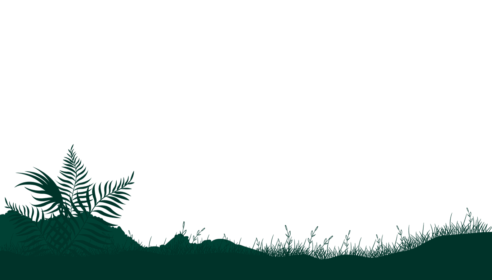

Transformando o mundo
através da empatia

Vamos fazer a diferença!
Você já parou para pensar em como suas ações podem fazer a diferença no mundo? Cada escolha que você faz, por menor que seja, pode ter um impacto poderoso e duradouro. Na nossa plataforma, acreditamos no poder transformador das ações individuais e queremos inspirar você a fazer parte dessa mudança!
Quais são os problemas
que devem ser
enfrentados?


O que podemos fazer para ajudar o meio ambiente?
Energia renovável
As energias renováveis são aquelas obtidas a partir de recursos naturais que são naturalmente reabastecidos ou regenerados, como a luz solar, o vento, a água em movimento, o calor da Terra e materiais orgânicos. Essas fontes de energia são consideradas limpas, pois geram baixas emissões de gases de efeito estufa e não contribuem para a poluição do ar, do solo ou da água.
Mas no que isso interfere?
Biodiversidade
A biodiversidade refere-se à variedade de formas de vida existentes em nosso planeta, incluindo a diversidade de espécies, genes e ecossistemas. É um componente essencial para a saúde e o equilíbrio dos ecossistemas, desempenhando um papel fundamental na manutenção dos serviços ecossistêmicos que sustentam a vida na Terra.
Tipos de biodiversidades
Consumo sustentável
O consumo sustentável é uma abordagem que busca equilibrar nossas necessidades e desejos com a capacidade dos recursos naturais de suportá-los. Envolve fazer escolhas conscientes e responsáveis ao adquirir produtos e serviços, levando em consideração seu impacto ambiental, social e econômico ao longo de todo o ciclo de vida.
Como diminuir o consumo?
Reciclagem
A reciclagem é um processo fundamental para a gestão sustentável dos resíduos e a preservação dos recursos naturais. Consiste em coletar, separar, processar e transformar materiais descartados em novos produtos ou matérias-primas, reduzindo assim a necessidade de extrair recursos naturais e diminuindo a quantidade de resíduos enviados para aterros sanitários.
Mas porquê reciclar?
Curiosidades
680 Mil
foram perdidas mais de 680 Mil de árvores por dia, uma média de 472 a cada minuto, 7 a cada segundo.
160 Mil
De acordo com dados do Instituto de Pesquisa Econômica Aplicada (Ipea), aproximadamente 160 mil toneladas de resíduos são geradas por dia no Brasil.
41 Mil
São 41 mil TONELADAS de comida jogadas fora por dia enquanto uma em cada nove pessoas passam fome no país, segundo o WFP (Programa Mundial de Alimentos) no Brasil.